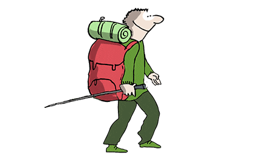
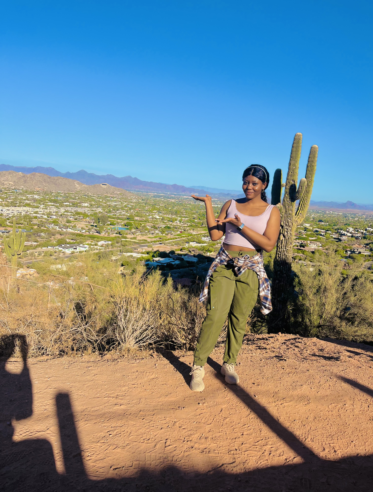
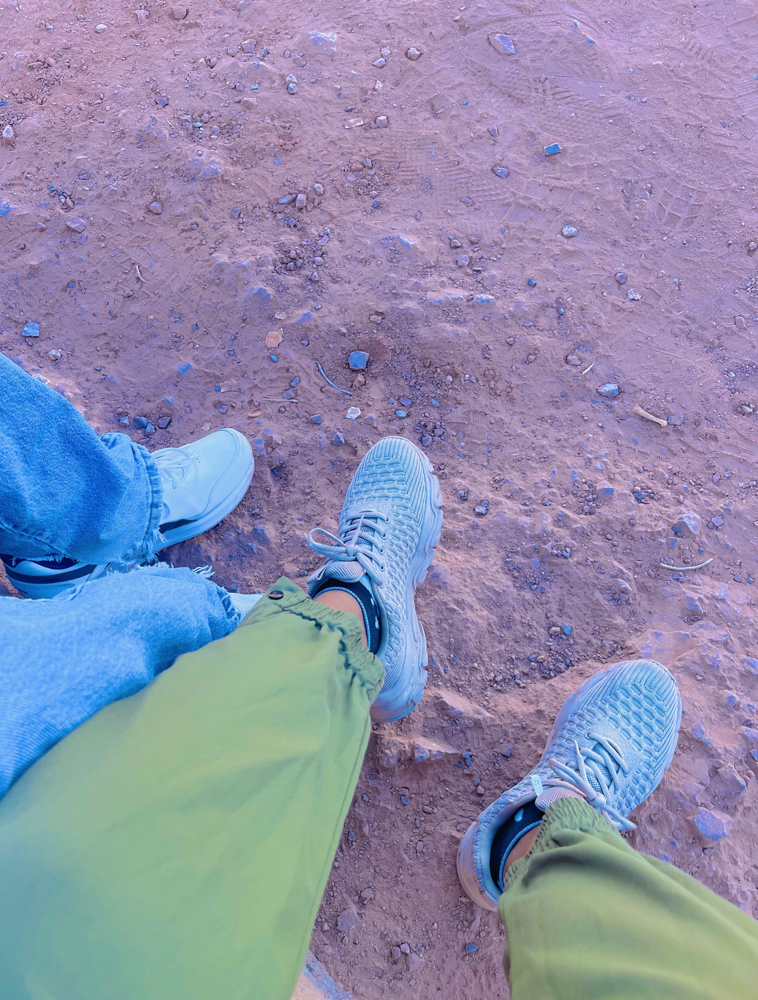
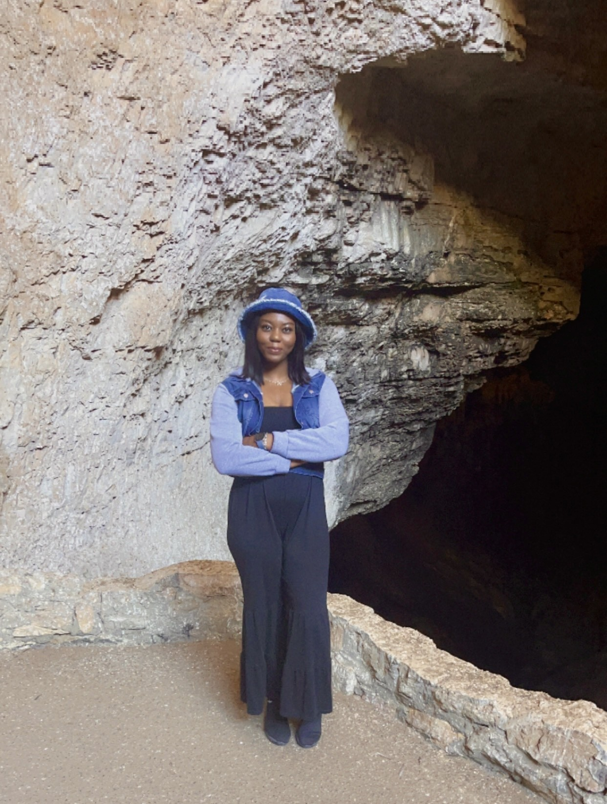
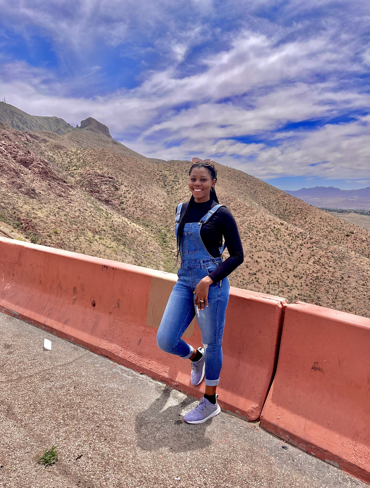

Hiking
Why I Love Hiking
Hiking is more than just a hobby for me, it's my way of reconnecting with nature and staying active. There's something magical about the fresh air, the sound of leaves crunching underfoot, and the breathtaking views you can only experience on a trail. Whether it's a short weekend hike or a challenging mountain climb, every adventure brings a sense of accomplishment and peace. My last hike was at Camelback Mountain Summit Trail in Arizona in December 2024, and the stunning views from the top made the climb unforgettable. Through hiking, I’ve discovered hidden trails, met like-minded adventurers, and gained a deeper appreciation for the world around me.



